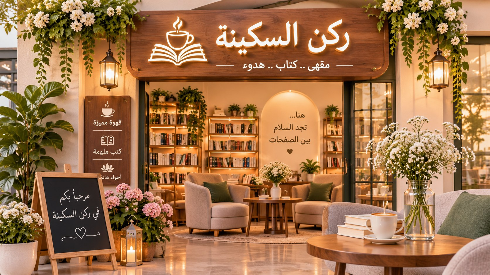

01
01تجارة إلكترونية · أسلوب حياة
حديقة الحكايات
متجر إلكتروني للورود والنباتات والتحف، صُمم ليمنح رحلة التسوق إحساساً بالجمال والهدوء.
مشاهدة المشروعتصميم · تقنية · ابتكار
أهلاً بك، أنا هند — متخصصة في الذكاء الاصطناعي أبتكر حلولاً رقمية وتجارب ويب إبداعية تجمع بين جمال التصميم وقوة التكنولوجيا.
خلف كل مشروع حكاية
هند عبدالقوي
أؤمن أن التصميم الجيد لا يكتفي بأن يبدو جميلاً؛ بل يجعل الفكرة أقرب، والتجربة أسهل.
أنا طالبة طموحة في تخصص الذكاء الاصطناعي، أجد في التقنية مساحة واسعة للتعلم وصناعة أثر إيجابي.
يشدّني تطوير المواقع وتصميم الواجهات، كما أستكشف إمكانات الذكاء الاصطناعي وأتعلم كيف يمكن توظيفه لصناعة حلول أكثر ابتكاراً. أعمل على تطوير مهاراتي خطوة بخطوة، وأحوّل ما أتعلمه إلى مشاريع تجمع بين الفائدة، الوضوح، والاهتمام بالتفاصيل.
هذا المعرض يوثّق رحلتي وأعمالي، ويعبّر عن طموحي لبناء تجارب رقمية تنمو معي ومع كل فكرة جديدة.
اقرأ عن رحلتيمختارات من أعمالي
لكل مشروع فكرته الخاصة؛ من التعليم والبهجة إلى الجمال والسكينة.
01تجارة إلكترونية · أسلوب حياة
متجر إلكتروني للورود والنباتات والتحف، صُمم ليمنح رحلة التسوق إحساساً بالجمال والهدوء.
مشاهدة المشروع 02
02تعليم تفاعلي · للأطفال
منصة تعليمية تفاعلية تمزج اللعب بالمعرفة، وتفتح للأطفال أبواباً لاكتشاف الرياضيات واللغة والعلوم.
مشاهدة المشروع 03
03تجربة تفاعلية · إلهام
مساحة تفاعلية للرسائل الإيجابية والإيمانية، تجمع بين الأمل والأذكار والمسبحة الذكية.
مشاهدة المشروع
04هوية مكان · تجربة هادئة
موقع مقهى يجمع بين الهدوء والقراءة والقهوة، في تجربة تدعو إلى التمهّل.
مشاهدة المشروع 05
05ملف شخصي · تطوير ويب
صفحة شخصية توثق رحلتي ومهاراتي ومشاريعي التعليمية في التقنية والذكاء الاصطناعي.
مشاهدة المشروعبعض المشاريع في طور التطوير؛ أُضيفت روابط الزيارة للمشاريع المنشورة فقط.
أدوات أتعلم بها وأبني
مساحة معرفية أوسّعها باستمرار، وأطبّقها في مشاريعي.
بناء صفحات منظمة ودلالية.
تنسيق الواجهات وصناعة تجارب متجاوبة.
إضافة التفاعل والحيوية للمواقع.
اهتمام بالتفاصيل وسهولة الاستخدام.
معرفة أعمل على تنميتها وتطبيقها.
تخصص أدرسه وشغف أستكشف آفاقه.
شغف بصري يكمل التجربة الرقمية.
خطوة وراء خطوة
رحلة تعلّم مستمرة في مجال يتسع كل يوم؛ أستكشف الذكاء الاصطناعي، وأبني أساساً متيناً في البرمجة، وأبحث عن طرق جديدة لتحويل التقنية إلى قيمة حقيقية.
لنتبادل الأفكارأطوّر معرفتي بالذكاء الاصطناعي والبرمجة، وأبني فهماً واضحاً للمفاهيم التي تقف خلف التقنيات الحديثة.
أجرّب ما أتعلمه من خلال مشاريع الويب، وأتدرّب على بناء واجهات متكاملة وسهلة الاستخدام.
أتطلع إلى اكتساب مهارات أعمق في تحليل البيانات وتطبيقات الذكاء الاصطناعي، والعمل على أفكار تجمع بين التقنية والإبداع.
مساحة تشاركية
لكل فكرة بداية، وربما تكون بدايتها هنا.
بوابة التعاون والإبداع
يسعدني التواصل وتبادل الأفكار حول التصميم والتقنية والذكاء الاصطناعي.